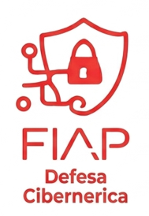

A Defesa Cibernética é uma área estratégica que busca proteger sistemas e informações contra ataques digitais. Com o aumento das ameaças virtuais, essa disciplina se tornou indispensável.
O profissional de defesa cibernética atua na prevenção, detecção e resposta a incidentes. Isso envolve monitorar redes, identificar vulnerabilidades e aplicar medidas corretivas.
Além disso, é necessário compreender o comportamento dos atacantes, antecipando possíveis estratégias. Essa visão proativa é fundamental para reduzir riscos.
A área também exige conhecimento em criptografia, firewalls e políticas de segurança. Esses recursos são utilizados para proteger dados sensíveis e garantir a integridade das informações.
Por fim, a Defesa Cibernética é vital para governos, empresas e indivíduos, já que a segurança digital é um dos pilares da sociedade moderna.
Aumentar a segurança em ambientes digitais, incluindo Cloud, IA e IoT.
Gerenciar vulnerabilidades, patches e backups com eficiência.
Propor ações proativas contra ataques virtuais.
Aplicar microssegmentação e inteligência artificial em segurança.
Dominar criptografia, Cyber Threat Intel, Cyberwar e Deep Web.
|Curso anterior| |Página principal| |Próximo curso|